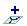

PDF version
PDF version
QGIS User Guide
Version 0.1pre1 (Moroz)
- Introduction
- Current Features
- Getting Started
- Working with vector data
- Working with raster data
- What is raster data?
- Raster formats supported in QGIS.
- Loading raster data in QGIS
- Symbolisation and properties for raster layers
- Identifying a Feature
Introduction
Quantum GIS (QGIS) is designed to be a Geographic Information System (GIS) built for Linux/Unix. QGIS currently offers basic support for vector, raster, and database formats.
Current Features
- Support for spatially enabled PostgreSQL tables using PostGIS
- Support for ESRI shapefiles and other vector formats support by the OGR library
- Identify features
- Display attribute table
- Select features
- Persistent selections
- Save projects
- Support for raster formats supported by the GDAL library
- Change vector symbology (single, graduated, and continuous)
- Display raster data such as digital elevation models, aerial photography or landsat imagery
- Change raster symbology (grayscale, pseudocolor and multiband RGB)
- Export to Mapserver map file
Getting Started
This section gives you a quick overview of running QGIS and examining data in available on the QGIS web page.
Installation
Installation of QGIS is documented in the Installation Guide.
Starting QGIS
Assuming the QGIS is installed in the PATH, you can start QGIS by typing: qgis.
When QGIS starts, an empty window is displayed as shown below.

In addition, you can start QGIS by specifying one or more datafiles on the commandline. For example, assuming you are in your data directory, you could start QGIS with two shapefiles and a raster file set to load on startup:
qgis ak_shade.tif alaska.shp majrivers.shp

Working with vector data
Loading vector data
To load one or more shapefiles, click on the Add Layer button .
The Select one or more layers to add dialog box will be displayed.

Navigate to the directory where the shapefiles reside. Select one or more files and click ok to load them.
When QGIS loads a layer, it assigns a random color to it as shown below.

Obviously QGIS's choice of colors is not very pleasing in this case.
Changing Symbology
To make the layer more appealing, open the Layer Properties dialog by right-clicking on a layer name in the table of contents (left side of the QGIS window) and selecting Properties.

If you like, change the display name of the layer by editing the Display name field. Click on the Symbology tab and click on the Outline color and Fill color and select a new color from the color chooser. You can also change the line width if desired.

After making the changes, click Ok to apply the changes to the layer. Note that the alaska layer has been renamed to Alaska and the color has been changed to a light green:

Identifying a Feature
Working with raster data
What is raster data?
Raster data in GIS are matrices of discrete cells that represent features on, above or below the earth's surface. Each cell in the raster grid is the same size, and cells are usually rectangular (in QGIS they will always be rectangular. Typical raster datasets include 'remote sensing' data (such as aerial photography and satellite imagery) and modelled data (such as an elevation matrix).
Raster data typically do not have an associated database record for each cell (unlike in vector data where it is normal for each feature to have an associated database record).
In GIS, a raster layer would have geopositioning data associated with it which will allow it to be positioned correctly in the map display to allow other vector and raster data to be overlayed with it. QGIS, can read this geopositioning data to facilitate properly displaying map overlays.
Raster formats supported in QGIS.
QGIS supports a number of different raster formats. Currently tested formats include:
- Arc/Info Binary Grid
- Arc/Info ASCII Grid
- Grass Raster
- GeoTIFF
- Spatial Data Transfer Standard Grids (with some limitations)
- USGS ASCII DEM
- Erdas Imagine
Because the raster implmentation in QGIS is based on the GDAL abstraction library, orther raster formats implemented in GDAL are also likely to work, but have not yet been tested. See the GDAL Raster Formats page for more details.
Loading raster data in QGIS
Raster layers are loaded either by clicking on the  icon
or by selecting the View->Add Raster Layer menu option. More than one layer can be loaded at the same time
by holding down the Control key and clicking on multiple items in the file dialog.
icon
or by selecting the View->Add Raster Layer menu option. More than one layer can be loaded at the same time
by holding down the Control key and clicking on multiple items in the file dialog.
Symbolisation and properties for raster layers
Symbolisation of raster layers is achieved by right clicking on a raster layer legend entry and choosing 'properties': on the popup menu that appears:

On the properties dialog for rasters you will see there are three tabs:
The general properties tab

The symbology properties tab

QGIS supports three forms of raster layer:
- Single Band Grayscale Rasters
- Palette Based RGB Rasters
- Multiband RGB Rasters
From these three basic layer types, eight forms of symbolised raster display can be used:
- Single Band Grayscale
- Single Band Pseudocolor
- Paletted Grayscale (where only the red, green or blue component of the image is displayed)
- Paletted Pseudocolor (where only the red, green or blue component of the image is displayed, but using a pseudocolor algorithm)
- Paletted RGB
- Multiband Grayscale (using only one of the bands to display the image)
- Mulitiband Pseudocolor (using only one of the bands shown in pseudocolor)
- Multiband RGB (using any combination of three bands)
QGIS has the capability to invert the colours in a given layer so that light colors become dark (and dark colors become light).
QGIS has the capability to invert the colours in a given layer so that light colors become dark (and dark colors become light).
QGIS has the capability to invert the colours in a given layer so that light colors become dark (and dark colors become light).
The raster statistics properties tab

Identifying a Feature
{kind=link}
{kind=link}
{kind=link}
{kind=link}
{kind=link}